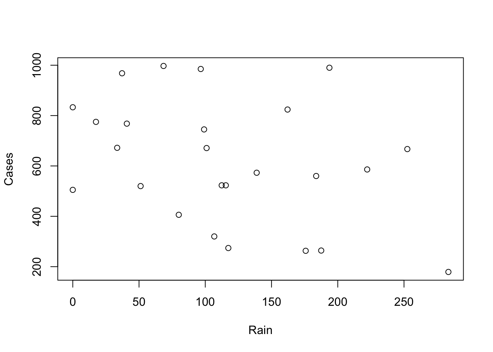
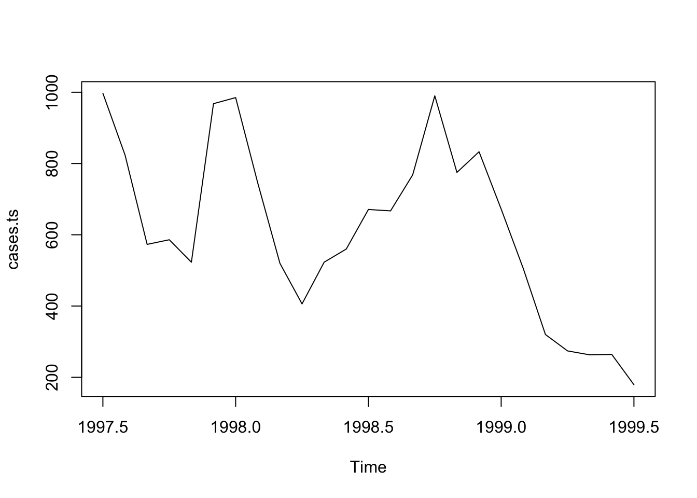

9 More graphical functions
Graphical functions in R are just like any other function in R in the sense that R provides you with a set of functions which can be altered or added to. In this exercise we will experiment with some of the graphical functions provided by R to demonstrate the flexibility of graphical functions in R. We will then use the graphical functions that we experiment with to create some useful graphical functions of our own.
The first function that we will develop will be a function that is capable of plotting two data series on a single graph. We will take this exercise slowly in order to introduce some further graphical functions.
Before we go any further we should start R and retrieve a dataset:
mal <- read.table("malaria.dat", header = TRUE)
attach(mal)The file malaria.dat contains data on rainfall (in mm) and the number of cases of malaria reported from health centres in an administrative district of Ethiopia between July 1997 and July 1999. The columns in this dataset are as follows:
| Time | Month and year (as text) |
| Cases | Number of cases of malaria reported |
| Rain | Rainfall in mm |
Examine the dataset:
mal## Time Cases Rain
## 1 Jul-97 997 68.5
## 2 Aug-97 824 162.1
## 3 Sep-97 573 138.8
## 4 Oct-97 586 222.2
## 5 Nov-97 523 115.5
## 6 Dec-97 968 37.2
## 7 Jan-98 985 96.6
## 8 Feb-98 745 99.1
## 9 Mar-98 520 51.2
## 10 Apr-98 406 80.0
## 11 May-98 523 112.4
## 12 Jun-98 560 183.7
## 13 Jul-98 671 101.0
## 14 Aug-98 667 252.5
## 15 Sep-98 768 40.8
## 16 Oct-98 990 193.7
## 17 Nov-98 775 17.5
## 18 Dec-98 833 0.0
## 19 Jan-99 672 33.5
## 20 Feb-99 505 0.0
## 21 Mar-99 320 106.8
## 22 Apr-99 274 117.4
## 23 May-99 263 175.8
## 24 Jun-99 264 187.5
## 25 Jul-99 179 283.5First we will plot the number of cases of malaria seen over time using the plot() function:
plot(Cases, type = "l")
The problem with this plot is that it does not treat the data as a time series. Adding the Time variable to the plot does not solve the problem:
plot(Time, Cases, type = "l")
Because Time is a factor variable. If you convert Time to a character variable using as.character() or prevent R from converting Time to a factor using the as.is parameter to the read.table() function the plot() function will return an error because it expects a numeric x-axis variable. We should, instead, specify a time series (ts) class object. Rather than change the original data, we will create a new object using the ts() function:
cases.ts <- ts(Cases, start = c(1997, 7), frequency = 12)Examine the cases.ts object:
cases.ts## Jan Feb Mar Apr May Jun Jul Aug Sep Oct Nov Dec
## 1997 997 824 573 586 523 968
## 1998 985 745 520 406 523 560 671 667 768 990 775 833
## 1999 672 505 320 274 263 264 179We can now plot cases.ts as a time series:
plot(cases.ts)
We might want to explore the association between the Rain and Cases variables. A simple scatter plot is not particularly informative:
plot(Rain, Cases)
It is better to treat both variables as time series (which they are) and use the built-in plot() methods for objects of class ts:
rain.cases.ts <- ts(cbind(Rain, Cases), start = c(1997,7), frequency = 12)
plot(rain.cases.ts)
The association between the Rain and Cases variables is now clearer with the number of malaria cases peaking shortly after peaks in rainfall.
The plot() function when used with objects of class ts produces useful output but it is not particularly flexible and the output is, sometimes, not particularly pretty. We can however use basic graphical functions to produce multiple plots. First we will set the mfrow graphical parameter using the par() function:
par(mfrow = c(2, 1))The par() function sets a graphical parameter. The mfrow parameter is used to set the number of charts that will appear on a page in rows and columns. We have specified two rows with one chart per row. Test this by plotting two charts:
plot(Rain, type = "l")
plot(Cases, type = "l")
We will want to have tick-marks on the x-axis of each for each record. We can set the number of tick-marks on axes by setting the lab graphical parameter using the par() function:
par(lab = c(length(Time), 10, 7))The par() function sets a graphical parameter. The lab parameter is used to set the number tick-marks on the x and y axes and the label size. We have specified a tick-mark on the x-axis for each record (i.e. using length(Time)), ten tick-marks on the y-axis, and a label length of seven. Test this by plotting two charts:
plot(Rain, type = "l")
plot(Cases, type = "l")
The problem with these charts is that the month and year are not displayed on the x-axis. We can get round this by plotting a chart without axes and then specifying the axes and labels directly:
plot(Rain, type = "l", axes = FALSE, xlab = "Time", ylab = "mm", main = "Rainfall")
axis(side = 1, labels = as.character(Time), at = 1:length(Time))
axis(side = 2)
plot(Cases, type = "l", axes = FALSE, xlab = "Time", ylab = "n", main = "Cases")
axis(side = 1, labels = as.character(Time), at = 1:length(Time))
axis(side = 2)
The resulting charts now look much better (you may need to resize the plot to display the x-axis labels correctly) but it would be nice to be able draw the two lines on a single chart.
Before proceeding we will use the par() function to specify one plot per window (using the mfrow parameter) and set the default number of tick-marks on the axes (using the lab parameter):
par(mfrow = c(1, 1))
par(lab = c(5, 5, 7))And then use the plot() and lines() function to draw the two lines on the same graph:
plot(Cases, type = "l")
lines(Rain, lty = 2)
The problem with this is that the ranges of the two variables are different and the plot() function automatically sets the y-axis to the range of the specified variable. To fix this problem we need to set the limits of the y-axis to the minimum and maximum value of both of variables using the ylim parameter of the plot() function:
plot(Cases, type = "l", ylim = c(min(Cases, Rain), max(Cases, Rain)))
lines(Rain, lty = 2)
We can improve the chart by adding a legend:
legend(18, 1000, legend = c("Cases", "Rainfall (mm)"), lty = c(1,2))
We could continue to improve the chart (e.g. by adding labels for the x-axis tick-marks taken from the Time variable, specifying more meaningful axis labels, and specifying a title) but the chart would be more useful if each variable made full use of the plotting area. We can do this by plotting one chart on top of another by using the new graphical parameter:
par(lab = c(length(Time), 5, 7))
plot(Cases, type = "l", lty = 1, axes = FALSE)
axis(side = 2)
par(new = TRUE)
plot(Rain, type = "l", lty = 2, axes = FALSE)
axis(side = 4)
axis(side = 1)
This chart is much clearer but there are still some improvements that could be made:
The chart should have a title. We can do this using the
mainparameter of either of theplot()functions.The y-axis labels are displayed on top of each other beside the left-hand y-axis. We can solve this problem by preventing the second
plot()function from displaying a y-axis label (i.e. by specifying an empty character string for theylabparameter).We will need to make room on the right-hand side of the chart for an axis label (i.e. by setting the
mar(margin) graphical parameter) and place the label there ourselves (using themtext()function).The x-axis should display the month and year which are held as character strings in the
Timevariable. We can do this using the labels parameter of theaxis()function after setting the appropriate number of tick-marks using thelabgraphical parameter.
The x-axis should be properly labelled. We can do this using the xlab parameters of the plot() functions. An empty string must be specified for one of the plot() functions in order to prevent the default label from being displayed.
Try this now:
par(mar = c(5, 5, 4, 5))
par(lab = c(length(Time), 5, 7))
plot(Cases, type = "l", lty = 1, axes = FALSE,
xlab = "", ylab = "", main = "Malaria cases and rainfall")
axis(side = 2)
mtext(text = "Malaria cases", side = 2, line = 3)
par(new = TRUE)
plot(Rain, type = "l", lty = 2, axes = FALSE,
xlab = "Month & Year", ylab = "")
axis(side = 4)
mtext(text = "Rainfall (mm)", side = 4, line = 3)
axis(side = 1, labels = as.character(Time), at = 1:length(Time))
Now that we know how to create a two-axis chart, we can write a function that we will be able to use whenever we need to plot two variables on the same chart. Create a new function called plot2var():
plot2var <- function() {}This creates an empty function called plot2var().
Use the fix() function to edit the plot2var() function:
fix(plot2var)Edit the function to read:
function(y1,
y2,
x.ticks,
x.lab = deparse(substitute(x.ticks)),
y1.lab = deparse(substitute(y1)),
y2.lab = deparse(substitute(y2)),
main = paste(y1.lab, "&", y2.lab)) {
old.par.mar <- par("mar")
old.par.lab <- par("lab")
par(mar = c(5, 5, 4, 5))
if(!missing(x.ticks)) {par(lab = c(length(x.ticks), 5, 7))}
plot(y1, type = "l", lty = 1, axes = FALSE,
xlab = "", ylab = "", main = main)
axis(side = 2)
mtext(text = y1.lab, side = 2, line = 3)
par(new = TRUE)
plot(y2, type = "l", lty = 2, axes = FALSE,
ylab = "", xlab = x.lab)
axis(side = 4)
mtext(text = y2.lab, side = 4, line = 3)
if(!missing(x.ticks)) {
axis(side = 1, labels = as.character(x.ticks),
at = 1:length(x.ticks))
} else {axis(side = 1)}
par(mar = old.par.mar)
par(lab = old.par.lab)
}Once you have made the changes shown above, save the file and quit the editor.